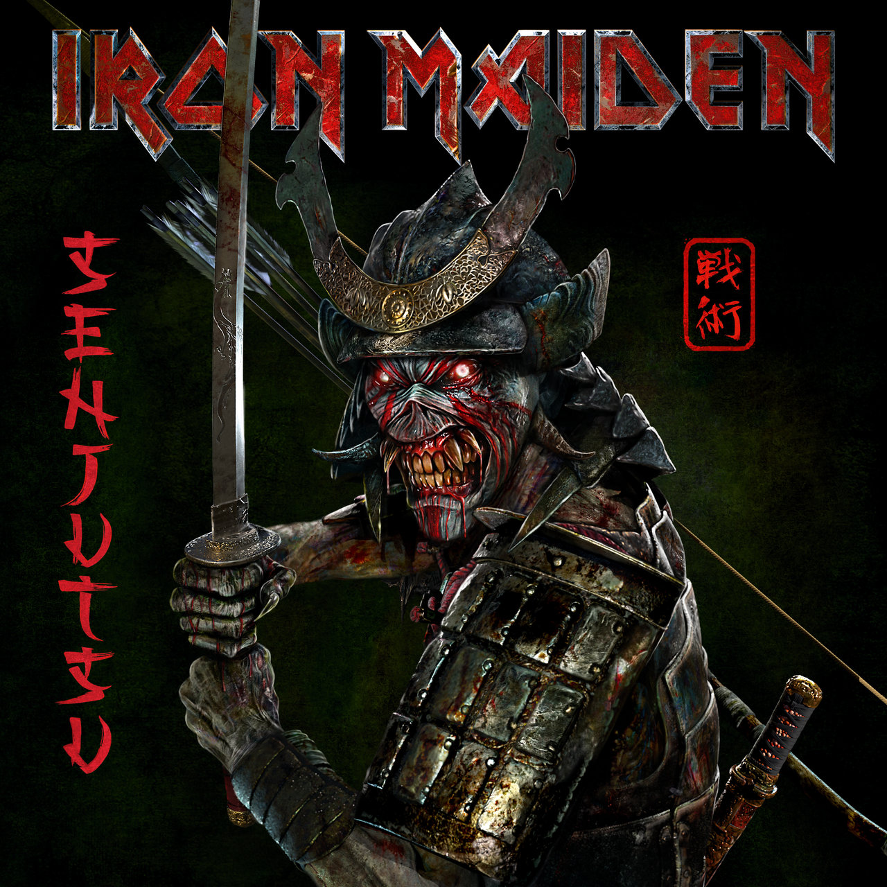

Neredeyse yaşım kadar (45) müzik geçmişi olan Iron Maiden Senjutsu adını taşıyan 2 diskten oluşan ve 81 dakika uzunluğa sahip 17. stüdyo albümlerini 3 Eylül’de çıkardı.

2015 yılında çıkardıkları Book of Souls albümleri sonrasında açıkçası yeni bir albüm beklemiyor olmanın yanında bu kadar iyi bir albümü hiç beklemiyordum. İlk single Writing on the Wall ile birlikte özellikle blogumun ismi ve hayatımdaki en iyi şarkı olarak kabul ettiğim Megadeth’in In My Darkest Hour’u ile isminin benzeşmesi ile dikkat çeken Darkest Hour albümdeki en iyi şarkılar. Darkest Hour, 1992’den Wasting Love’ı hatırlatsa da çok çok iyi bir şarkı.
Bilboard listelerine en üst sıradan giren Iron Maiden albümü ünvanını da kazanan Senjutsu, benim kendi halindeki “2021 Yılı En İyi Albümler†listemde de rahatlıkla yerini almıştı zaten.